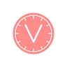
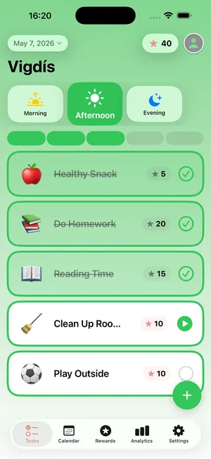

VigdísSjónrænt dagskrárapp
Sjónrænt skipulag fyrir daglega rútínu
Sjónrænt dagskrárapp hannað af þroskaþjálfa. Skýr yfirsýn yfir daglegt líf — fyrir alla fjölskylduna.
Sækja í App StoreAppið er á íslensku og ensku.

★★★★★
„Þetta app er mesta snilld sem ég hef séð! Akkúrat það sem vantaði á mitt heimili!“